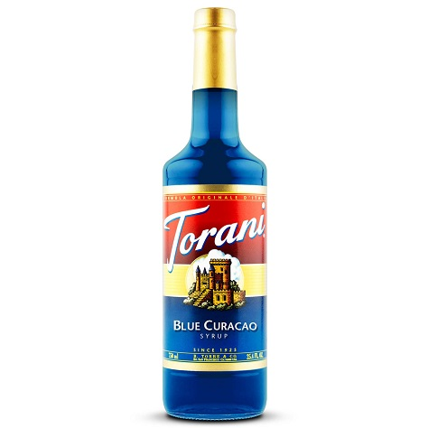

Recipe
The Recipe for an Emerald Titan is quite simple.

- 1 Can / 12oz Original Mtn Dew™
- 2oz Blue Curacao Torani's™ or other soda syrup
- 2oz Vanilla Torani's™ or other soda syrup
- 1 16-20oz glass
- 1 scoop crushed ice
Start with the ice in the glass, add the syrups, pour the soda over top, stir and serve.